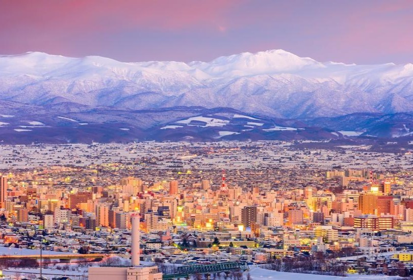

Sapporo
Sapporo est la cinquième ville japonaise la plus peuplée avec
1,9 million d'habitants, située au nord sur l’île de Hokkaido
dont elle est la capitale régionale. Egalement troisième plus
grande ville de l'archipel avec une superficie de plus de 1.100
km², la cité ne s'est réellement développée démographiquement et
économiquement qu'à partir des années 1870. Elle présente
aujourd’hui un art de vivre tout à fait unique au Japon.
Construite sur une topographie nord-américaine aux rues
perpendiculaires, la ville a notamment été rendue célèbre à
l'international grâce aux Jeux Olympiques d'hiver de 1972. On y
déguste également de succulents ramen, mais la ville est presque
encore plus connue pour la bière qui porte son nom (dans le trio
des plus vendues au Japon avec Asahi et Kirin). Un de ses
évènements les plus appréciés est son fameux festival de la
neige qui se déroule chaque année au mois de février, et
présente de superbes sculptures sur glace au non moins célèbre
parc Odori, situé au cœur de la ville.